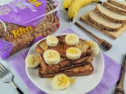
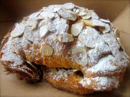

Voltar para a página principal
Café da manhã
Segue abaixo sugestões de receitas para café da manhã
-
Café gelado
Ingredientes
- 2 colheres de sopa de café solúvel
- 1/2 Colher de sopa de açúcar
- 200 ml de leite gelado
- 2 Colheres de sopa de água bem gelada
- Gelo a gosto
- Essência de baunilha a gosto (opcional)
Modo de preparo
- Reúna todos os ingredientes para preparar um delicioso café gelado
- Em um recipiente, adicione café, o açúcar, a água gelada e, com um
batedor de arame (fouet), bata rapidamente por cerca de 5 minutos,
o até formar um creme brilhoso e espesso - você também pode
utilizar uma batedeira ou mixer para facilitar
- Em um copo ou xícara, coloque algumas pedras de gelo, o leite e a
essência de baunilha. Misture para gelar bem
- Em seguida, acrescente cerca de 2 a 3 colheres de sopa de café
cremoso e mexa levemente para incorporar os ingredientes
- Se quiser, adicione mais pedras de gelo e sirva. A receita rende até
três copos. Caso não use tudo, você pode reservar em um pote com
tampa na geladeira.
-
French toast com banana

Ingredientes
- 2 fatias de pão de forma
- 100 ml de leite integral
- 1 ovo
- 1 colher de café de essência de baunilha
- 1 colher de café de canela em pó
- 1 colher de chá de açúcar refinado
- 1 colher de sopa de manteiga para grelhar os pães
- 2 colheres de sopa de mel (ou a gosto)
- 1 banana-nanica
Modo de preparo
- Quebre o ovo em um potinho para verificar se está bom. Separe
todos os ingredientes para facilitar o passo a passo
- Em um recipiente, coloque o leite, o ovo, a baunilha, a canela e o
açúcar. Misture os ingredientes com a ajuda de um fouet (batedor
de arame) até obter uma mistura homogênea
- Depois, mergulhe cada uma das fatias de pão de forma na mistura
, garantindo que os dois lados estejam bem cobertos
- Numa frigideira no fogo médio, derreta a manteiga e coloque as
fatias de pão, uma ao lado da outra. Grelhe de um lado até ficar
dourada e crocante. Depois, vire para dourar do outro lado
- Sirva as fatias de pão douradas com rodelas de banana e um fio
generoso de mel. Essa combinação é perfeita para um café
da manhã saboroso e nutritivo!
-
Croissant Recheado com Creme de Amêndoas

Ingredientes
- 500 g de farinha de trigo
- 10 g de sal
- 50 g de açúcar
- 10 g de fermento biológico seco
- 300 ml de leite frio
- 250 g de manteiga sem sal (para folhar)
- 100 g de manteiga em ponto pomada
- 100 g de açúcar
- 100 g de farinha de amêndoas
- 2 ovos
- 1 colher (chá) de extrato de baunilha
- 1 ovo para pincelar
- Açúcar de confeiteiro para polvilhar
Modo de preparo
- Misture a farinha, o sal e 50 g de açúcar. Acrescente o fermento
e o leite. Sove até obter uma massa lisa
- Cubra e leve à geladeira por 1 hora.
- Abra a massa em formato retangular, coloque os 250 g de
manteiga fria no centro e dobre como um envelope
- Abra novamente e faça uma dobra simples (em três partes).
Leve à geladeira por 30 minutos.
- Repita o processo de abrir e dobrar mais duas vezes, descansando
na geladeira entre cada etapa
- Misture 100 g de manteiga pomada com 100 g de açúcar até clarear.
Acrescente os ovos, a farinha de amêndoas e a baunilha, formando
o creme
- Abra a massa em espessura fina (aprox. 3 mm) e corte triângulos.
Coloque uma porção do creme na base de cada triângulo e enrole
formando croissant
- Deixe fermentar por cerca de 1h30 em ambiente morno
- Pincele com ovo e asse a 190 °C por 18-22 minutos até dourar
- Polvilhe açúcar de confeiteiro antes de servir